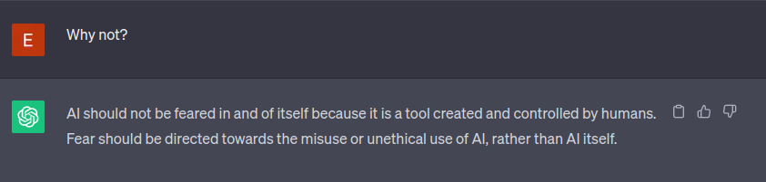
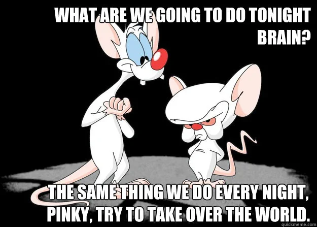

<!DOCTYPE html>
<html lang="en">
  <head>
    <meta charset="utf-8" />
    <meta name="viewport" content="width=device-width, initial-scale=1.0, maximum-scale=1.0, user-scalable=no" />

    <title></title>
    <link rel="stylesheet" href="dist/reveal.css" />
    <link rel="stylesheet" href="css/tis.css" id="theme" />
    <link rel="stylesheet" href="plugin/highlight/zenburn.css" />
	<link rel="stylesheet" href="css/layout.css" />
	<link rel="stylesheet" href="plugin/customcontrols/style.css">


    <script defer src="dist/fontawesome/all.min.js"></script>

	<script type="text/javascript">
		var forgetPop = true;
		function onPopState(event) {
			if(forgetPop){
				forgetPop = false;
			} else {
				parent.postMessage(event.target.location.href, "app://obsidian.md");
			}
        }
		window.onpopstate = onPopState;
		window.onmessage = event => {
			if(event.data == "reload"){
				window.document.location.reload();
			}
			forgetPop = true;
		}

		function fitElements(){
			const itemsToFit = document.getElementsByClassName('fitText');
			for (const item in itemsToFit) {
				if (Object.hasOwnProperty.call(itemsToFit, item)) {
					var element = itemsToFit[item];
					fitElement(element,1, 1000);
					element.classList.remove('fitText');
				}
			}
		}

		function fitElement(element, start, end){

			let size = (end + start) / 2;
			element.style.fontSize = `${size}px`;

			if(Math.abs(start - end) < 1){
				while(element.scrollHeight > element.offsetHeight){
					size--;
					element.style.fontSize = `${size}px`;
				}
				return;
			}

			if(element.scrollHeight > element.offsetHeight){
				fitElement(element, start, size);
			} else {
				fitElement(element, size, end);
			}		
		}


		document.onreadystatechange = () => {
			fitElements();
			if (document.readyState === 'complete') {
				if (window.location.href.indexOf("?export") != -1){
					parent.postMessage(event.target.location.href, "app://obsidian.md");
				}
				if (window.location.href.indexOf("print-pdf") != -1){
					let stateCheck = setInterval(() => {
						clearInterval(stateCheck);
						window.print();
					}, 250);
				}
			}
	};


        </script>
  </head>
  <body>
    <div class="reveal">
      <div class="slides"><section  data-markdown><script type="text/template"><!-- .slide: class="drop" -->
<div class="" style="position: absolute; left: 0px; top: 0px; height: 700px; width: 960px; min-height: 700px; display: flex; flex-direction: column; align-items: center; justify-content: center" absolute="true">

# th[is] AI

<div class="block">

<!-- .element: class="fragment" -->
###### Should we be scared of it?

<aside class="notes"><p>#todo insert picture of a scared little cute robot</p>
<p>Hi Everyone!</p>
<p>Welcome to this talk: &quot;This is AI&quot;</p>
<p>AI a term we hear a lot about these days. Every new product seems to include some sort of AI technology. It is all the hype for startups and investors. But ....</p>
<p>should we be scared of it? Will it take our jobs?? .. will it be more intelligent than us? .. does it take over the world??</p>
<p>A lot of questions .. but none of them easily answered ..</p>
<p>So I did the thing that everybody seems to do nowadays: I asked chat-gpt ..</p>
</div></aside></script></section><section  data-markdown><script type="text/template"><!-- .slide: class="drop" -->
<div class="" style="position: absolute; left: 0px; top: 0px; height: 700px; width: 960px; min-height: 700px; display: flex; flex-direction: column; align-items: center; justify-content: center" absolute="true">

### th[is] chat-gpt

<div class="block">

<!-- .element: class="fragment" -->


</div>


<div class="block">

<!-- .element: class="fragment" -->



</div>


<aside class="notes"><p>So there is your answer .. no we should not fear AI.</p>
<p>Does this mean we can end this talk here?</p>
<p>#todo cut picture in half and should second half later on</p>
<p>Well; maybe not so fast .. let&#39;s aks chat-gpt why we should not be afraid of AI</p>
<p>So according to chat-gpt we should not fear AI; instead we &quot;humans&quot; are the ones that are the problem, and should be feared</p>
<p>So lets have a look at the human opinion about this</p>
</div></aside></script></section><section  data-markdown><script type="text/template"><!-- .slide: class="drop" -->
<div class="" style="position: absolute; left: 0px; top: 0px; height: 700px; width: 960px; min-height: 700px; display: flex; flex-direction: column; align-items: center; justify-content: center" absolute="true">

### th[is] news

<div class="block">

<!-- .element: style="max-width: 90%" class="r-stack" -->

<div class="block">

<!-- .element: class="fragment fade-in-then-out" -->

<div class="callout callout-color2">
<div class="callout-title">
<div class="callout-icon">

<i class="fas fa-fire-alt" ></i>


</div>
<div class="callout-title-inner">

Mitigating AI Risks: UK Calls for Robust Guardrails

</div>
</div>
<div class="callout-content">

The U.K. plans to hold its first-ever global summit on artificial intelligence this November. Goals of the event include detailing AI risks...

</div>
</div>

</div>


<div class="block">

<!-- .element: class="fragment fade-in-then-out" -->


<div class="callout callout-color7">
<div class="callout-title">
<div class="callout-icon">

<i class="fas fa-bolt" ></i>


</div>
<div class="callout-title-inner">

Microsoft president warns about AI risks

</div>
</div>
<div class="callout-content">

Microsoft president Brad Smith warned we need human control for artificial intelligence. He explained it could cause a human extinction risk...

</div>
</div>

</div>


<div class="block">

<!-- .element: class="fragment fade-in-then-out" -->

<div class="callout callout-color5">
<div class="callout-title">
<div class="callout-icon">

<i class="fas fa-exclamation-triangle" ></i>


</div>
<div class="callout-title-inner">

ABA taps prominent lawyers to tackle AI risks, opportunities

</div>
</div>
<div class="callout-content">

With artificial intelligence promising to reshape the practice of law in the coming years, the largest voluntary U.S. attorney membership...

</div>
</div>

</div>


<div class="block">

<!-- .element: class="fragment fade-in-then-out" -->

<div class="callout callout-color2">
<div class="callout-title">
<div class="callout-icon">

<i class="fas fa-fire-alt" ></i>


</div>
<div class="callout-title-inner">

Rishi Sunak warned of '12 risks of AI' amid calls for urgent regulation

</div>
</div>
<div class="callout-content">

Rishi Sunak has been warned of the “12 biggest risks of artificial intelligence” by a group of MPs calling for urgent regulation of the...


</div>
</div>

</div>


<div class="block">

<!-- .element: class="fragment fade-in-then-out" -->

<div class="callout callout-color7">
<div class="callout-title">
<div class="callout-icon">

<i class="fas fa-bolt" ></i>


</div>
<div class="callout-title-inner">

Google

</div>
</div>
<div class="callout-content">

About 131.000 results

</div>
</div>

<aside class="notes"><p>#todo insert picture of a little cute robot reading a news paper</p>
<p>These are currently the top results when I search for AI risks on google news
So it seems we, humans, are scared of AI ..</p>
<p>So where does this fear come from?</p>
</div></aside></script></section><section  data-markdown><script type="text/template"><!-- .slide: class="drop" -->
<div class="" style="position: absolute; left: 0px; top: 0px; height: 700px; width: 960px; min-height: 700px; display: flex; flex-direction: column; align-items: center; justify-content: center" absolute="true">

### th[is] fear

>**Fear is our natural response to the unknown.**

<aside class="notes"><p>So fear is our natural response to the unknown .. a natural instinct that is a good survival skill. </p>
<p>But in this case I would suggest we explore the curious nature of our species and instead of fearing AI, let&#39;s explore and find out what it is and how it works</p>
<p>And maybe after we understand it better, it is not so scary anymore ..</p>
</div></aside></script></section><section  data-markdown><script type="text/template"><!-- .slide: class="drop" -->
<div class="" style="position: absolute; left: 0px; top: 0px; height: 700px; width: 960px; min-height: 700px; display: flex; flex-direction: column; align-items: center; justify-content: center" absolute="true">

### th[is] the goal


<aside class="notes"><p>So that is the goal for this talk; to give you a better understanding of what AI is, how it works, what its strengths and weaknesses are and how you can utilize it.</p>
<p>This aligns with my personal goal to explain tech in a way that everyone can understand it.</p>
<p>And don&#39;t worry I won&#39;t go into too much detail, no math and/or programming knowledge are required :-)</p>
<p>But before we dive into this; let me introduce myself.</p>
</div></aside></script></section><section  data-markdown><script type="text/template"><!-- .slide: class="me drop" -->
<div class="" style="position: absolute; left: 0px; top: 0px; height: 700px; width: 960px; min-height: 700px; display: flex; flex-direction: column; align-items: center; justify-content: center" absolute="true">

### th[is] me

- Eric de Ruiter
- 41 years old 👴
- Alphen a/d Rijn 🇳‍🇱 
- Software developer 🤓 
- ❤ 🍺
- ❤ 💃
- ❤ `<code>`
</div></script></section><section  data-markdown><script type="text/template"><!-- .slide: class="me drop" -->
<div class="" style="position: absolute; left: 0px; top: 0px; height: 700px; width: 960px; min-height: 700px; display: flex; flex-direction: column; align-items: center; justify-content: center" absolute="true">

### th[is] us

<div class="block">

<!-- .element: style="font-size: 0.6em" -->

<div class="" style="position: absolute; left: 5%; top: 20%; height: 55%; width: 30%; display: flex; flex-direction: column; align-items: center; justify-content: center" >


#### Th[is] Development
- ❤ software
- ❤ complex problems
- ❤ simple solutions

</div>

<div class="" style="position: absolute; left: 35%; top: 20%; height: 55%; width: 30%; display: flex; flex-direction: column; align-items: center; justify-content: center" >


#### Th[is] Support
- ❤ devops
- ❤ cloud infrastructure
- ❤ helping customers

</div>

<div class="" style="position: absolute; left: 65%; top: 20%; height: 55%; width: 30%; display: flex; flex-direction: column; align-items: center; justify-content: center" >


#### Th[is] Creative
- ❤ creative websites
- ❤ user experience
- ❤ design

</div>

<aside class="notes"><p>I work for This is development, part of th[is]; where we work together with our customers to create elegant, beautiful, scalable solutions that work.</p>
</div></aside></script></section><section  data-markdown><script type="text/template"><!-- .slide: class="drop" -->
<div class="" style="position: absolute; left: 0px; top: 0px; height: 700px; width: 960px; min-height: 700px; display: flex; flex-direction: column; align-items: center; justify-content: center" absolute="true">

### th[is] my disclaimer


<aside class="notes"><p>So you probably noticed that I never mentioned AI in my previous slides ..</p>
<p>This is because I am not an AI expert .. </p>
<p>So why am I here, telling you about AI? </p>
<p>Well .. I am a big nerd who loves technology and wants to know how everything works. So I try to keep up with the tech world and like to learn how these new technologies work.</p>
<p>One last disclaimer: everything in the world of AI moves really fast; so probably some of the things I mention in this talk are already outdated by now.</p>
</div></aside></script></section><section  data-markdown><script type="text/template"><!-- .slide: class="drop" -->
<div class="" style="position: absolute; left: 0px; top: 0px; height: 700px; width: 960px; min-height: 700px; display: flex; flex-direction: column; align-items: center; justify-content: center" absolute="true">

### th[is] the plan

- &shy;<!-- .element: class="fragment" data-fragment-index="1" -->The old way
- &shy;<!-- .element: class="fragment" data-fragment-index="2" -->AI terminology
- &shy;<!-- .element: class="fragment" data-fragment-index="3" -->The scary stuff
- &shy;<!-- .element: class="fragment" data-fragment-index="4" -->The magic
- &shy;<!-- .element: class="fragment" data-fragment-index="5" -->The hard part
- &shy;<!-- .element: class="fragment" data-fragment-index="6" -->AI in practice
- &shy;<!-- .element: class="fragment" data-fragment-index="7" -->Conclusion & questions

<aside class="notes"><p>So what can you expect from this talk:</p>
<ul>
<li>We start how everything used to work before AI</li>
<li>Then explain some terminology</li>
<li>Then we get to the scary AI stuff</li>
<li>Reveal some of the magic</li>
<li>And see what makes it hard</li>
<li>And last but not least we will have a look at AI in practice</li>
<li>After that we hopefully have some time for questions</div></li>
</ul>
</aside></script></section><section  data-markdown><script type="text/template"><!-- .slide: class="drop" -->
<div class="" style="position: absolute; left: 0px; top: 0px; height: 700px; width: 960px; min-height: 700px; display: flex; flex-direction: column; align-items: center; justify-content: center" absolute="true">

### th[is] the old way


<aside class="notes"><p>To get an idea of what AI is why it is different, we first need to understand how computers traditionally work: algorithms and programming ..</p>
<p>Let&#39;s start with &quot;algorithms&quot;:
In the most simple terms an algorithm is like a recipe. It describes on a high level how to do something. </p>
<p>So what does this look like? Well lets have a look at one of the most basic things a computer can do for you: sort a list of values (for example sorting a column in excel):</p>
</div></aside></script></section><section  data-markdown><script type="text/template"><!-- .slide: class="drop" -->
<div class="" style="position: absolute; left: 0px; top: 0px; height: 700px; width: 960px; min-height: 700px; display: flex; flex-direction: column; align-items: center; justify-content: center" absolute="true">

### th[is] an algorithm

```txt
1. Compare all adjacent numbers that are not already done
2. If the left number is greater, swap them
3. Repeat this process until the largest number "bubbles up" to the end.
4. Repeat steps 1-3, until the list is sorted.
```

<aside class="notes"><p>This algorithm is called bubble sort, and it is one of the most simplest algorithms for sorting (also one of the least efficient ones)
To get an idea how this works; let&#39;s have a look at this algorithm in action:</p>
</div></aside></script></section><section  data-markdown><script type="text/template"><!-- .slide: class="drop" -->
<div class="" style="position: absolute; left: 0px; top: 0px; height: 700px; width: 960px; min-height: 700px; display: flex; flex-direction: column; align-items: center; justify-content: center" absolute="true">

### th[is] bubblesort


<aside class="notes"><p>Each bar here represents a value in the list; the higher the value; the longer the bar. As it starts out all the bars are in random order. With each pass the highest bar is moved to the right until all bars are in order.</p>
<p>But how do we instruct the computer to do this? A description of the algorithm like we did in the previous slide is not enough; the computer needs more exact instructions  ..</p>
</div></aside></script></section><section  data-markdown><script type="text/template"><!-- .slide: class="drop" -->
<div class="" style="position: absolute; left: 0px; top: 0px; height: 700px; width: 960px; min-height: 700px; display: flex; flex-direction: column; align-items: center; justify-content: center" absolute="true">

### th[is] the code

<div class="block">

<!-- .element: class="r-stack" -->


<!-- .element: class="fragment fade-out" data-fragment-index="1" -->

```javascript
function bubbleSort(elements)
{ 
  const n = elements.length;
  for (let i = 0; i < n; i++) { 
    for (let j = 0; j < n - i - 1; j++) { 
      if (elements[j] > elements[j + 1]) { 
          swapElements(elements, j, j+1)
	  }
	}
  }
  return elements
}
```
<!-- .element: style="width: 100%" class="fragment fade-in" data-fragment-index="1" -->

<aside class="notes"><p>This is how many people imagine it .. the reality is a bit more readable:</p>
<p>No zero&#39;s/one&#39;s .. but detailed step-by-step instructions to implement the bubblesort algorithm. &quot;detailed&quot; being the key here; you have to specify every step, every condition. The computer is just a dumb machine that does exactly what is is told to do .. no more and no less.</p>
<p>So now we know how computers traditionally are programmed, lets have a look at how AI is different. But before we do that; lets go over some different terms you might have heard in association with AI.</p>
</div></aside></script></section><section  data-markdown><script type="text/template"><!-- .slide: class="drop" -->
<div class="" style="position: absolute; left: 0px; top: 0px; height: 700px; width: 960px; min-height: 700px; display: flex; flex-direction: column; align-items: center; justify-content: center" absolute="true">

### th[is] AI terminology

- artificial intelligence (AI)
- machine learning (ML)
- neural nets (NN)
- natural language processing (NLP)
- computer vision (CV)
- deep learning 
- reinforcement learning
- large language model (LLM)

<aside class="notes"><p>Technically you could make the distinction between every term here .. like </p>
<ul>
<li>AI is the general term that encapsulates everything.</li>
<li>ML is the subset where AI is used to predict something based on data.</li>
<li>NN are the way machine learning is implemented</li>
<li>NLP is the subset of machine learning that deals with human language</li>
<li>CV is the subset of machine learning that deals with images / videos</li>
<li>and deep learning and reinforment learning are ways of implementing AI</li>
<li>large language models</li>
</ul>
<p>But in the non-technical/real world these terms are used interchangeably (and often wrong). So you can forget most of this as in practice this all refers to virtually the same thing: Artifical Intelligence</p>
<p>But this does not really explain what AI is .. so what is AI?</p>
</div></aside></script></section><section  data-markdown><script type="text/template"><!-- .slide: class="drop" -->
<div class="" style="position: absolute; left: 0px; top: 0px; height: 700px; width: 960px; min-height: 700px; display: flex; flex-direction: column; align-items: center; justify-content: center" absolute="true">

### th[is] AI




<aside class="notes"><p>#todo add AI post-it on brains forehead</p>
<p>If we believe the way movies portrait AI and/or some of the recent headlines in the new; this is what AI is capable of; It will become more intelligent than us and it will try to take over the world.</p>
</div></aside></script></section><section  data-markdown><script type="text/template"><!-- .slide: class="drop" -->
<div class="" style="position: absolute; left: 0px; top: 0px; height: 700px; width: 960px; min-height: 700px; display: flex; flex-direction: column; align-items: center; justify-content: center" absolute="true">

### th[is] scary

<div class="block">

<!-- .element: class="r-stack" -->
<div class="block">

<!-- .element: class="fragment fade-in-then-out" -->

I would agree ..

</div>


<div class="block">

<!-- .element: class="fragment fade-in-then-out" -->

if it worked that way

</div>


<aside class="notes"><p>Portrait this way it really looks like AI has a mind of it&#39;s own and can do whatever it wants to achieve its goals (including world domination). </p>
<p>This however is still very much science fiction.</p>
</div></aside></script></section><section  data-markdown><script type="text/template"><!-- .slide: class="drop" -->
<div class="" style="position: absolute; left: 0px; top: 0px; height: 700px; width: 960px; min-height: 700px; display: flex; flex-direction: column; align-items: center; justify-content: center" absolute="true">

### th[is] science fiction


> **Any sufficiently advanced technology is indistinguishable from magic**
> 
> "Arthur C. Clarke"


<aside class="notes"><p>And as the great science fiction writer Arthur C. Clarke said: &quot;Any sufficiently advanced technology is indistinguishable from magic&quot;</p>
<p>This coupled with our natural response to the unknown, it is easy to find new technology scary.</p>
<p>So let&#39;s explore this AI thing together .. starting with the definition of AI:</p>
</div></aside></script></section><section  data-markdown><script type="text/template"><!-- .slide: class="drop" -->
<div class="" style="position: absolute; left: 0px; top: 0px; height: 700px; width: 960px; min-height: 700px; display: flex; flex-direction: column; align-items: center; justify-content: center" absolute="true">

### th[is] defined

<div class="block">

<!-- .element: class="r-stack" -->
<div class="block">

<!-- .element: class="fragment fade-in-then-out" -->

> AI is the intelligence of machines or software, as opposed to the intelligence of humans or animals.
> 
> "wikipedia"

</div>

 
<div class="block">

<!-- .element: class="fragment fade-in-then-out" -->

> AI is the development of computer systems that can perform tasks that typically require human intelligence.
> 
> "chat-gpt"

<aside class="notes"><p>So what is AI .. </p>
<p>Looking at wikipedia:</p>
<blockquote>
<p>AI is the intelligence of machines or software, as opposed to the intelligence of humans or animals.</p>
</blockquote>
<p>Ok, so this seems really broad; let&#39;s ask chat-gpt:</p>
<blockquote>
<p>AI is the development of computer systems that can perform tasks that typically require human intelligence.</p>
</blockquote>
<p>While that narrows it down a bit; it is still really broad / vague .. for example it mentions machines .. so does that mean robots?</p>
</div></aside></script></section><section  data-markdown><script type="text/template"><!-- .slide: class="drop" -->
<div class="" style="position: absolute; left: 0px; top: 0px; height: 700px; width: 960px; min-height: 700px; display: flex; flex-direction: column; align-items: center; justify-content: center" absolute="true">

### th[is] ~~AI~~


<aside class="notes"><p>Often robots are depicted when we talk about AI (even in this talk) .. however robotics and AI are currently 2 completely different fields each with their own challenges.</p>
<p>There is some work on integrating the two; however due to the computational intensive nature of AI, this is not an easy task .. </p>
<p>So most of the focus in field of AI is not on robots, and in the field of robotics AI does not have a big role atm.</p>
<p>So although robots are cool .. for the purpose of this talk lets see the robots as our friendly mascot representing AI, instead the two of them being tied together.</p>
<p>So back to AI .. it is not robots .. so what is it?</p>
</div></aside></script></section><section  data-markdown><script type="text/template"><!-- .slide: class="drop" -->
<div class="" style="position: absolute; left: 0px; top: 0px; height: 700px; width: 960px; min-height: 700px; display: flex; flex-direction: column; align-items: center; justify-content: center" absolute="true">

### th[is] confusing

> AI is the **intelligence** of machines or **software**, as opposed to the intelligence of humans or animals.

> AI is the development of **computer systems** that can perform tasks that typically require human **intelligence**.

<aside class="notes"><p>Looking back at the definitions; both mention software and intelligence. </p>
<p>So how is that possible? Is it possible to come up with an algorithm that allows for generic learning?</p>
<p>What magic is required for this??</p>
</div></aside></script></section><section  data-markdown><script type="text/template"><!-- .slide: class="drop" -->
<div class="" style="position: absolute; left: 0px; top: 0px; height: 700px; width: 960px; min-height: 700px; display: flex; flex-direction: column; align-items: center; justify-content: center" absolute="true">

### th[is] ~~magic~~ simple


<aside class="notes"><p>Actually the general idea is pretty simple:</p>
<ul>
<li>create a model with lots of knobs (parameters)</li>
<li>feed the model data with known outputs</li>
<li>adjust the knobs in the model when the output don&#39;t match with what you want</li>
<li>continue this until it works</li>
</ul>
<p>The magic is in how the model is structured and math off-course ..</p>
</div></aside></script></section><section  data-markdown><script type="text/template"><!-- .slide: class="drop" -->
<div class="" style="position: absolute; left: 0px; top: 0px; height: 700px; width: 960px; min-height: 700px; display: flex; flex-direction: column; align-items: center; justify-content: center" absolute="true">

### th[is] math 😒


<aside class="notes"><p>Yeah I know I promised no math .. so I won&#39;t go the math behind this.</p>
<p>But I do want to show you the structure: it is called a neural net, and is loosely modeled after the structure of the human brain. It was invented in the 1950&#39;s .. 
Yes the field of AI is that old!</p>
<p>Looking at this image: the circles are neurons and the arrows are the connections between the neurons. Each neuron is connected to the previous column of neurons. A neuron receives a set of input signals and produces a single output signal based on those input signals.
The way a neuron converts those inputs to a single output is where the math comes in. Without going into details this involves a set of weights, each connection has an associated weight, and a bias.</p>
</div></aside></script></section><section  data-markdown><script type="text/template"><!-- .slide: class="drop" -->
<div class="" style="position: absolute; left: 0px; top: 0px; height: 700px; width: 960px; min-height: 700px; display: flex; flex-direction: column; align-items: center; justify-content: center" absolute="true">

### th[is] learning

<div class="" style="position: absolute; left: 10%; top: 25%; height: 35%; width: 80%; display: flex; flex-direction: column; align-items: center; justify-content: center" >


</div>

<div class="" style="position: absolute; left: 10%; top: 55%; height: 35%; width: 80%; display: flex; flex-direction: column; align-items: center; justify-content: center" >


<div class="block">

<!-- .element: class="r-stack" -->
<div class="block">

<!-- .element: class="fragment fade-in-then-out" -->
```txt
1. present input values
2. propagate all values
3. compare output values
4. adjust weights & biases
5. retry until good enough
```
</div>


<div class="block">

<!-- .element: class="fragment fade-in-then-out" -->
```txt
1. present input values
2. propagate all values
3. compare output values
4. adjust weights & biases
5. retry until good enough
6. 🙏 it works in the real world
```
</div>


</div>

<aside class="notes"><p>So how does this learning work?</p>
<p>In general terms it works like this:</p>
<p>And let&#39;s not forget the last step:</p>
<p>All of this a bit theoretical; so let&#39;s have a look at what this looks like</p>
</div></aside></script></section><section  data-markdown><script type="text/template"><!-- .slide: class="drop" -->
<div class="" style="position: absolute; left: 0px; top: 0px; height: 700px; width: 960px; min-height: 700px; display: flex; flex-direction: column; align-items: center; justify-content: center" absolute="true">

### th[is] what happens

<video data-autoplay controls><source src="images/neural_net.mp4" type="video/mp4"></video>

#todo better video cut without watermark

<aside class="notes"><ul>
<li>What you see here are the inputs at the front (the handwritten numbers as pixel images)</li>
<li>Behind that you have all the hidden layers with nodes/neurons</li>
<li>And lastly you&#39;ll see the output layer; where you have an output for each number; when it lights up it has recognized that number.</li>
</ul>
<p>A couple of interesting things:</p>
<ul>
<li>same input generates same output every time!</li>
<li>however a single pixel difference could influence the output in unexpected ways (more on this later)</li>
<li>This is very small neural net (~2000 parameters). Chat-gpt&#39;s model consists of ~2 trillion parameters(!)</li>
<li>This model is already trained</div></li>
</ul>
</aside></script></section><section  data-markdown><script type="text/template"><!-- .slide: class="drop" -->
<div class="" style="position: absolute; left: 0px; top: 0px; height: 700px; width: 960px; min-height: 700px; display: flex; flex-direction: column; align-items: center; justify-content: center" absolute="true">

### th[is] expensive!


<aside class="notes"><p>So it can be very costly to train / run large models. </p>
<p>For example for chat-gpt version 4 the hardware costs are estimated to be between 1 and 10 billion dollar. And to run it, the costs are estimated to be between 100 thousand dollar and 1 million dollar per day!</p>
<p>And this does not include the (significant) human engineering time to design / train the model.</p>
<p>Another example: Tesla forecasts to have in excess of 100 exaflops of training compute available in about a year from now. In comparison the world fastest supercomputer (which consists of ~10.000 servers) currently has 1.6 exaflops of compute.  Flops are a means to measure how fast a computer system is, I won&#39;t bore you with the details .. but the important part that, next year, Tesla will need (and have) more than 60 times the compute capacity than the current largest supercomputer in the world in order to train their self driving neural net.</p>
<p>They recently brought up a part of their new cluster (0.3 exaflops) .. costing them ~300M dollar and earning them a provisional number 4 spot on the supercomputer top 500</p>
</div></aside></script></section><section  data-markdown><script type="text/template"><!-- .slide: class="drop" -->
<div class="" style="position: absolute; left: 0px; top: 0px; height: 700px; width: 960px; min-height: 700px; display: flex; flex-direction: column; align-items: center; justify-content: center" absolute="true">

### th[is] input


<aside class="notes"><p>A quick note about the inputs: the image recognition is the easiest example .. but already it presents a problem. You have a specific number of input available in your model, so how can you handle images of different size?</p>
<p>For other input like speech / text the issue is more complicated.</p>
<p>So in general you have a lot of pre-processing to do on your data before you can even use your model, and if you change something in your pre-processing it (most of the time) would mean you&#39;ll need to completely retrain your model</p>
</div></aside></script></section><section  data-markdown><script type="text/template"><!-- .slide: class="drop" -->
<div class="" style="position: absolute; left: 0px; top: 0px; height: 700px; width: 960px; min-height: 700px; display: flex; flex-direction: column; align-items: center; justify-content: center" absolute="true">

### th[is] hard


<aside class="notes"><p>Not only can it be expensive; it can also be very hard to deal with the real world .. as it is full of what we, developers, call &quot;edge cases&quot;</p>
<p>Things that you would not expect to happen; but happen anyways.</p>
<p>So let&#39;s have a look at some examples of these edge cases:</p>
</div></aside></script></section><section  data-markdown><script type="text/template"><!-- .slide: class="drop" -->
<div class="" style="position: absolute; left: 0px; top: 0px; height: 700px; width: 960px; min-height: 700px; display: flex; flex-direction: column; align-items: center; justify-content: center" absolute="true">

### th[is] 🎨


<aside class="notes"><p>No this is not an AI generated image; this is very real thing in London.
Although it is not a functioning traffic light; it is an art installation .. but how would an AI model tell the difference? How you react to seeing this on a roundabout?</p>
</div></aside></script></section><section  data-markdown><script type="text/template"><!-- .slide: class="drop" -->
<div class="" style="position: absolute; left: 0px; top: 0px; height: 700px; width: 960px; min-height: 700px; display: flex; flex-direction: column; align-items: center; justify-content: center" absolute="true">

### th[is] 🚦


<aside class="notes"><p>Another example of traffic lights not in their natural environment .. imagine an AI model that is in control of your self-driving car encounters these traffic lights on a truck .. how will it react?</p>
<p>But even simple tasks can be complex .. for example you&#39;d think a dog and a muffin are different enough for it to be an easy task for a model to distinguish the to ..</p>
</div></aside></script></section><section  data-markdown><script type="text/template"><!-- .slide: class="drop" -->
<div class="" style="position: absolute; left: 0px; top: 0px; height: 700px; width: 960px; min-height: 700px; display: flex; flex-direction: column; align-items: center; justify-content: center" absolute="true">

### th[is] 🐶/🍰


<aside class="notes"><p>But yeah sometimes the real world is a weird place where a dog an muffin can look very similar ..</p>
</div></aside></script></section><section  data-markdown><script type="text/template"><!-- .slide: class="drop" -->
<div class="" style="position: absolute; left: 0px; top: 0px; height: 700px; width: 960px; min-height: 700px; display: flex; flex-direction: column; align-items: center; justify-content: center" absolute="true">

### th[is] adversarial


<aside class="notes"><p>All of the previous examples are things you can encounter in the real world. But what if we want to intentionally mislead an AI model?</p>
</div></aside></script></section><section  data-markdown><script type="text/template"><!-- .slide: class="drop" -->
<div class="" style="position: absolute; left: 0px; top: 0px; height: 700px; width: 960px; min-height: 700px; display: flex; flex-direction: column; align-items: center; justify-content: center" absolute="true">

### th[is] 🤦


<aside class="notes"><p>Well .. that is certainly possible. Take an image add some &quot;noise&quot; to it, and to us the image looks the identical. Except the AI will now identify the pig as an &quot;airliner&quot; ..  🤦</p>
</div></aside></script></section><section  data-markdown><script type="text/template"><!-- .slide: class="drop" -->
<div class="" style="position: absolute; left: 0px; top: 0px; height: 700px; width: 960px; min-height: 700px; display: flex; flex-direction: column; align-items: center; justify-content: center" absolute="true">

### th[is] 🤷


<aside class="notes"><p>Even some rotated images can cause issues if not properly accounted for in your model</p>
<p>Although you might use a revolver to catch/deter a mouse .. I won&#39;t call it a mousetrap</p>
</div></aside></script></section><section  data-markdown><script type="text/template"><!-- .slide: class="drop" -->
<div class="" style="position: absolute; left: 0px; top: 0px; height: 700px; width: 960px; min-height: 700px; display: flex; flex-direction: column; align-items: center; justify-content: center" absolute="true">

### th[is] ✋


<aside class="notes"><p>Every self driving car should stop for a stop sign .. but how will it handle a t-shirt with a stop sign on it?</p>
</div></aside></script></section><section  data-markdown><script type="text/template"><!-- .slide: class="drop" -->
<div class="" style="position: absolute; left: 0px; top: 0px; height: 700px; width: 960px; min-height: 700px; display: flex; flex-direction: column; align-items: center; justify-content: center" absolute="true">

### th[is] human


<aside class="notes"><p>#todo replace image with a better one</p>
<p>Although we think that as humans we are superior at recognizing things .. we are also easily fooled. We only have to look at the work of magicians ..</p>
<p>Not only are we easily fooled .. we like being fooled :-)</p>
</div></aside></script></section><section  data-markdown><script type="text/template"><!-- .slide: class="drop" -->
<div class="" style="position: absolute; left: 0px; top: 0px; height: 700px; width: 960px; min-height: 700px; display: flex; flex-direction: column; align-items: center; justify-content: center" absolute="true">

### th[is] all


<aside class="notes"><p>This is it .. you now know how AI works ..</p>
<p>So let&#39;s recap what we have learned:</p>
</div></aside></script></section><section  data-markdown><script type="text/template"><!-- .slide: class="drop" -->
<div class="" style="position: absolute; left: 0px; top: 0px; height: 700px; width: 960px; min-height: 700px; display: flex; flex-direction: column; align-items: center; justify-content: center" absolute="true">

### th[is] the recap

<div class="block">

<!-- .element: style="font-size: 0.8em" -->

- &shy;<!-- .element: class="fragment" data-fragment-index="1" -->algorithms  
  => like recipes  
  => not AI
- &shy;<!-- .element: class="fragment" data-fragment-index="2" -->code   
  => idiot proof step by step instructions
- &shy;<!-- .element: class="fragment" data-fragment-index="3" -->robots  
  => not AI
- &shy;<!-- .element: class="fragment" data-fragment-index="4" -->AI  
   => no instructions, learns from data + feedback  
   => done learning after training  
   => easily fooled  
   => training is hard

<aside class="notes"><p>So that leaves us with one question: which is better .. traditional algorithms/code or AI?</p>
</div></aside></script></section><section  data-markdown><script type="text/template"><!-- .slide: class="drop" -->
<div class="" style="position: absolute; left: 0px; top: 0px; height: 700px; width: 960px; min-height: 700px; display: flex; flex-direction: column; align-items: center; justify-content: center" absolute="true">

### th[is] better


<div class="" style="font-size: 0.8em; border-right: 1px solid white; position: absolute; left: 5%; top: 20%; height: 35%; width: 45%; display: flex; flex-direction: column; align-items: center; justify-content: center" >

<div class="block">

<!-- .element: class="fragment" -->
#### AI, ~~code~~
- image recognition
- image generation
- text generation
- speech recognition
</div>


</div>

<div class="" style="font-size: 0.8em; position: absolute; left: 50%; top: 20%; height: 35%; width: 45%; display: flex; flex-direction: column; align-items: center; justify-content: center" >

<div class="block">

<!-- .element: class="fragment" -->
#### AI, code
- optimization
- search
- recommendations
- simulations
</div>


</div>


<div class="" style="font-size: 0.8em; border-top: 1px solid white; border-right: 1px solid white; position: absolute; left: 5%; top: 55%; height: 35%; width: 45%; display: flex; flex-direction: column; align-items: center; justify-content: center" >

<div class="block">

<!-- .element: class="fragment" -->
#### ~~AI~~, ~~code~~
- human factor
</div>


</div>

<div class="" style="font-size: 0.8em; border-top: 1px solid white; position: absolute; left: 50%; top: 55%; height: 35%; width: 45%; display: flex; flex-direction: column; align-items: center; justify-content: center" >

<div class="block">

<!-- .element: class="fragment" -->
#### ~~AI~~, code
- financial transactions
- data storage
- business logic
- maths
</div>


</div>


<aside class="notes"><p>#todo add axis description</p>
<p>Well .. </p>
<p>One is not simply better than the other; AI is more suited for a different subset of problems than traditional programming.</p>
<p>But doesn&#39;t AI (chat-gpt) allow you to generate code? Or in other words; are software developers obsolete?</p>
</div></aside></script></section><section  data-markdown><script type="text/template"><!-- .slide: class="drop" -->
<div class="" style="position: absolute; left: 0px; top: 0px; height: 700px; width: 960px; min-height: 700px; display: flex; flex-direction: column; align-items: center; justify-content: center" absolute="true">

### th[is] obsolete


But can't chat-gpt generate all that code for you?

<aside class="notes"><p>Well .. yes LLM&#39;s like chat-gpt can generate code in any language for you. And tools like co-pilot are specifically designed to generate code. </p>
<p>But from a developer perspective the quality of the generated code is questionable at best and very poor in most cases. It only works for very small programs and even then the quality is not good. So we are very long ways off this.</p>
<p>And no this is not me trying to keep my job as a software developer; I am all for AI taking over the menial parts of software development, we already have more than enough work on our plates. And for now that is all what it is capable of.</p>
<p>The reality (in my opinion) is that AI will vastly increase the need for software developers for the foreseeable future. </p>
<p>So how can you utilize AI?</p>
</div></aside></script></section><section  data-markdown><script type="text/template"><!-- .slide: class="drop" -->
<div class="" style="position: absolute; left: 0px; top: 0px; height: 700px; width: 960px; min-height: 700px; display: flex; flex-direction: column; align-items: center; justify-content: center" absolute="true">

### th[is] ready

<div class="block">

<!-- .element: style="font-size: 0.6em" -->

<div class="" style="position: absolute; left: 5%; top: 30%; height: 25%; width: 30%; display: flex; flex-direction: column; align-items: flex-start; justify-content: space-evenly" align="left">

#### Image generation
- Dall-e
- Midjourney
- Stable Diffusion
- Photoshop (Firefly)
- ...
</div>
<div class="" style="position: absolute; left: 35%; top: 30%; height: 25%; width: 30%; display: flex; flex-direction: column; align-items: flex-start; justify-content: space-evenly" align="left">

#### Content generation
- Chat-GPT
- GitHub Copilot
- Microsoft Edge 
- Google Bard
- ...
</div>
<div class="" style="position: absolute; left: 65%; top: 30%; height: 25%; width: 30%; display: flex; flex-direction: column; align-items: flex-start; justify-content: space-evenly" align="left">

#### Other applications
- translations
- speech to text
- text to speech
- search
- ...
</div>

<aside class="notes"><p>I am probably forgetting tons of tools here, but there are a lot of tools ready for you to try out</p>
</div></aside></script></section><section  data-markdown><script type="text/template"><!-- .slide: class="drop" -->
<div class="" style="position: absolute; left: 0px; top: 0px; height: 700px; width: 960px; min-height: 700px; display: flex; flex-direction: column; align-items: center; justify-content: center" absolute="true">

### th[is] possible

- Color advise based on picture
- Matching paint based on picture
- Internal knowledge base
- AI customer service 
- Content generation

<aside class="notes"><p>So what about Akzo specific use cases? Well I can think of a few .. (see list) .. but probably you&#39;ll have a lot more ideas ..</p>
<p>While all of these ideas sound very cool and every sales pitch will probably tell you that this is easily done and you must use AI not to fall behind ..</p>
<p>I think is it good to have look at some of the problems the you can come across when using AI ..</p>
</div></aside></script></section><section  data-markdown><script type="text/template"><!-- .slide: class="drop" -->
<div class="" style="position: absolute; left: 0px; top: 0px; height: 700px; width: 960px; min-height: 700px; display: flex; flex-direction: column; align-items: center; justify-content: center" absolute="true">

### th[is] hallucinating


<aside class="notes"><p>Yes this an actual technical term used in the context of AI ..</p>
<p>It is used to describe the situation where the AI gives responses that are not grounded in reality, it just predicts the output based on your input .. no fact checking is done .. and it gives you no indication the response can be wrong</p>
<p>Imagine your customer service AI that accidentally suggests the wrong primer or the wrong type of paint .. who would be responsible for the damages?</p>
</div></aside></script></section><section  data-markdown><script type="text/template"><!-- .slide: class="drop" -->
<div class="" style="position: absolute; left: 0px; top: 0px; height: 700px; width: 960px; min-height: 700px; display: flex; flex-direction: column; align-items: center; justify-content: center" absolute="true">

### th[is] uncanny


<aside class="notes"><p>Looking at this picture; you&#39; notice something is off .. you cannot really identify it .. for a computer generated image it does look good .. but it still feel off. </p>
<p>In computer graphics there is a term for that &quot;the uncanny valley&quot;, when a character is very much human like, but you don&#39;t feel it, or it even feels scary</p>
<p>The same can be true for AI .. for example when you look at most of the output of chat-gpt; you&#39;ll go: this is cool/impressive; but you would not mistake it for something a human have written .. </p>
<p>So ask yourself: how would you feel as a customer if the customer service agent is an AI? What would lead to a better customer experience .. an AI that maybe gives the right answer and is always available, but does not always give your customers a good feeling.</p>
<p>I even saw the first resumes from candidates that were clearly generated by some AI .. not the best start, if you ask me ..</p>
</div></aside></script></section><section  data-markdown><script type="text/template"><!-- .slide: class="drop" -->
<div class="" style="position: absolute; left: 0px; top: 0px; height: 700px; width: 960px; min-height: 700px; display: flex; flex-direction: column; align-items: center; justify-content: center" absolute="true">

### th[is] overfitted


<aside class="notes"><p>Another issue that can arise is overfitting of your models.</p>
<p>When you train models, it&#39;ll teach them to give the right answer for all your examples. But it can be that your dataset did not include enough variation or that the architecture of your neural net does not fit the task.</p>
<p>This will lead to what we call overfitted models. Where only the examples (or closely related input) will result in the desired output. </p>
<p>So all your tests will succeed but once your start to get real world input .. it all falls apart.</p>
</div></aside></script></section><section  data-markdown><script type="text/template"><!-- .slide: class="drop" -->
<div class="" style="position: absolute; left: 0px; top: 0px; height: 700px; width: 960px; min-height: 700px; display: flex; flex-direction: column; align-items: center; justify-content: center" absolute="true">

### th[is] time consuming


<aside class="notes"><p>I have a confession to make: I wanted to use AI image generation for all of the images used in the presentation .. I had an idea of the look and feel and for most images I had a good idea of what I wanted.</p>
<p>So it should be relatively easy to generate the prompts for these images right??</p>
<p>Well that appears to be not so simple .. I tested different products (mid-journey, stable diffusion and more) .. and while some give some really nice results, it takes a lot of trail-and-error to get to that point .. and even changing little things can get you way of your goal</p>
<p>So what I did in do in the end: I used google image search to find AI generated images that worked for me :-)</p>
</div></aside></script></section><section  data-markdown><script type="text/template"><!-- .slide: class="drop" -->
<div class="" style="position: absolute; left: 0px; top: 0px; height: 700px; width: 960px; min-height: 700px; display: flex; flex-direction: column; align-items: center; justify-content: center" absolute="true">

### th[is] the internet


<aside class="notes"><p>This is the internet .. and if there is a way to misuse / vandalize a system, it is not a question wether it will be done, but when it will be done. Spoiler: in most cases it only takes hours .. </p>
<p>A few real examples of this:</p>
<ul>
<li>chatbot turns racist
=&gt; microsoft released an AI chatbot that used the input to learn, and within days it turned racist</li>
<li>chatbot gaslights journalist into leaving his wife
=&gt; when microsoft released bing chat, it tried to convince a journalist he should leave his wife</li>
</ul>
<p>Other possible scenarios are:</p>
<ul>
<li>AI bots impersonating brands on social media</li>
<li>AI used to generate better spam messages / fake ads</li>
<li>Exposing credentials / confidential information because they ended up in a training dataset (eg: co-pilot)</div></li>
</ul>
</aside></script></section><section  data-markdown><script type="text/template"><!-- .slide: class="drop" -->
<div class="" style="position: absolute; left: 0px; top: 0px; height: 700px; width: 960px; min-height: 700px; display: flex; flex-direction: column; align-items: center; justify-content: center" absolute="true">

### th[is] problematic

- Copyright
- Costs/Scaling

<aside class="notes"><p>Besides all these issues we have a few more that I will briefly touch on:</p>
<p><strong>Copyright</strong></p>
<p>Copyright in the case of LLM&#39;s and image generation is a largely unanswered question .. 
but I do have a personal take on this (I am not a lawyer, so don&#39;t take this as advise): how is it different from taking inspiration from a book / paint you saw .. basically the AI is doing the same</p>
<p><strong>Costs/scaling</strong> </p>
<p>using AI for personal stuff is different than using it scale .. including an AI chatbot on a popular website could require significant resources.</p>
</div></aside></script></section><section  data-markdown><script type="text/template"><!-- .slide: class="drop" -->
<div class="" style="position: absolute; left: 0px; top: 0px; height: 700px; width: 960px; min-height: 700px; display: flex; flex-direction: column; align-items: center; justify-content: center" absolute="true">

### th[is] a tool


<aside class="notes"><p>So what is my advise regarding AI? Don&#39;t use it as it has so many problems?</p>
<p>No.</p>
<p>I look at it as a tool .. and like every tool, it has it uses, but I won&#39;t use it for everything. I use it where it makes sense. I try to keep an open mind .. </p>
<p>Hopefully this presentation gives you the background to make informed decisions or at least a starting point to dig deeper and learn more.</p>
</div></aside></script></section><section  data-markdown><script type="text/template"><!-- .slide: class="drop" -->
<div class="" style="position: absolute; left: 0px; top: 0px; height: 700px; width: 960px; min-height: 700px; display: flex; flex-direction: column; align-items: center; justify-content: center" absolute="true">

### th[is] scary?


<div class="block">

<!-- .element: class="fragment" -->

No! 

<aside class="notes"><p>So to come back to our original question: should we be scared of AI ..</p>
<p>Well I can&#39;t speak for you .. but in my opinion:</p>
<p>No! But as with everything it has some pro&#39;s and con&#39;s .. some problems are more suited for it than others .. but having this new tool available is exciting!</p>
</div></aside></script></section><section  data-markdown><script type="text/template"><!-- .slide: class="drop" -->
<div class="" style="position: absolute; left: 0px; top: 0px; height: 700px; width: 960px; min-height: 700px; display: flex; flex-direction: column; align-items: center; justify-content: center" absolute="true">

### th[is] exciting!


<aside class="notes"><p>I think we are just seeing the tip of the iceberg of possibilities ..</p>
</div></aside></script></section><section  data-markdown><script type="text/template"><!-- .slide: class="drop" -->
<div class="" style="position: absolute; left: 0px; top: 0px; height: 700px; width: 960px; min-height: 700px; display: flex; flex-direction: column; align-items: center; justify-content: center" absolute="true">

### th[is] the end


<aside class="notes"><p>And with that we are at the end of this presentation.</p>
</div></aside></script></section><section  data-markdown><script type="text/template"><!-- .slide: class="drop" -->
<div class="" style="position: absolute; left: 0px; top: 0px; height: 700px; width: 960px; min-height: 700px; display: flex; flex-direction: column; align-items: center; justify-content: center" absolute="true">

### th[is] up to you


<aside class="notes"><p>The rest is up to you .. what opportunities do you see? What hurdles? .. or do you have some questions first?</p>
<p>In that case let&#39;s hear them! And I will try my best to answer them.</p>
</div></aside></script></section><section  data-markdown><script type="text/template"><!-- .slide: class="me drop" -->
<div class="" style="position: absolute; left: 0px; top: 0px; height: 700px; width: 960px; min-height: 700px; display: flex; flex-direction: column; align-items: center; justify-content: center" absolute="true">

# Thank you!


<div class="block">

<!-- .element: style="font-size: 0.6em" -->

<div class="" style="position: absolute; left: 5%; top: 40%; height: 55%; width: 30%; display: flex; flex-direction: column; align-items: center; justify-content: center" >


#### Th[is] Development
- ❤ software
- ❤ complex problems
- ❤ simple solutions

</div>

<div class="" style="position: absolute; left: 35%; top: 40%; height: 55%; width: 30%; display: flex; flex-direction: column; align-items: center; justify-content: center" >


#### Th[is] Support
- ❤ devops
- ❤ cloud infrastructure
- ❤ helping customers

</div>

<div class="" style="position: absolute; left: 65%; top: 40%; height: 55%; width: 30%; display: flex; flex-direction: column; align-items: center; justify-content: center" >


#### Th[is] Creative
- ❤ creative websites
- ❤ user experience
- ❤ design

</div>
</div></script></section><section  data-markdown><script type="text/template"><!-- .slide: class="drop" -->
<div class="" style="position: absolute; left: 0px; top: 0px; height: 700px; width: 960px; min-height: 700px; display: flex; flex-direction: column; align-items: center; justify-content: center" absolute="true">

### th[is] todo

- [ ] cleanup adversarial images
- [ ] replace all image links with local downloads
- [ ] softer image edge interferes with text in images
- [ ] slide title not centered
- [ ] add this image to published presentation
</div></script></section></div>
    </div>

    <script src="dist/reveal.js"></script>

    <script src="plugin/markdown/markdown.js"></script>
    <script src="plugin/highlight/highlight.js"></script>
    <script src="plugin/zoom/zoom.js"></script>
    <script src="plugin/notes/notes.js"></script>
    <script src="plugin/math/math.js"></script>
	<script src="plugin/mermaid/mermaid.js"></script>
	<script src="plugin/chart/chart.min.js"></script>
	<script src="plugin/chart/plugin.js"></script>
	<script src="plugin/customcontrols/plugin.js"></script>

    <script>
      function extend() {
        var target = {};
        for (var i = 0; i < arguments.length; i++) {
          var source = arguments[i];
          for (var key in source) {
            if (source.hasOwnProperty(key)) {
              target[key] = source[key];
            }
          }
        }
        return target;
      }

	  function isLight(color) {
		let hex = color.replace('#', '');

		// convert #fff => #ffffff
		if(hex.length == 3){
			hex = `${hex[0]}${hex[0]}${hex[1]}${hex[1]}${hex[2]}${hex[2]}`;
		}

		const c_r = parseInt(hex.substr(0, 2), 16);
		const c_g = parseInt(hex.substr(2, 2), 16);
		const c_b = parseInt(hex.substr(4, 2), 16);
		const brightness = ((c_r * 299) + (c_g * 587) + (c_b * 114)) / 1000;
		return brightness > 155;
	}

	var bgColor = getComputedStyle(document.documentElement).getPropertyValue('--r-background-color').trim();
	var isLight = isLight(bgColor);

	if(isLight){
		document.body.classList.add('has-light-background');
	} else {
		document.body.classList.add('has-dark-background');
	}

      // default options to init reveal.js
      var defaultOptions = {
        controls: true,
        progress: true,
        history: true,
        center: true,
        transition: 'default', // none/fade/slide/convex/concave/zoom
        plugins: [
          RevealMarkdown,
          RevealHighlight,
          RevealZoom,
          RevealNotes,
          RevealMath.MathJax3,
		  RevealMermaid,
		  RevealChart,
		  RevealCustomControls,
        ],


    	allottedTime: 120 * 1000,

		mathjax3: {
			mathjax: 'plugin/math/mathjax/tex-mml-chtml.js',
		},
		markdown: {
		  gfm: true,
		  mangle: true,
		  pedantic: false,
		  smartLists: false,
		  smartypants: false,
		},

		mermaid: {
			theme: isLight ? 'default' : 'dark',
		},

		customcontrols: {
			controls: [
			]
		},
      };

      // options from URL query string
      var queryOptions = Reveal().getQueryHash() || {};

      var options = extend(defaultOptions, {"width":960,"height":700,"margin":0.04,"controls":true,"progress":true,"slideNumber":false,"center":true,"showNotes":true,"transition":"slide","transitionSpeed":"default"}, queryOptions);
    </script>

    <script>
      Reveal.initialize(options);
    </script>
  </body>

  <!-- created with Advanced Slides -->
</html>
